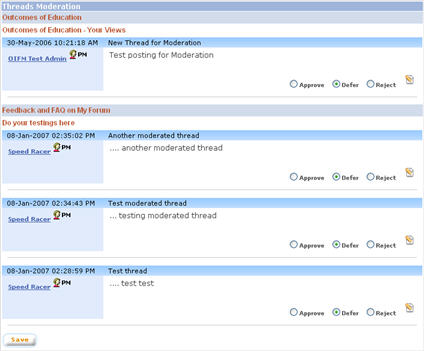

|
Threads Moderation
Threads created with “Moderation required” setting will be listed on this page. Administrators / moderators assigned to moderate a board can only see threads created under the assigned board and will not be able to view / moderate threads from other boards.
a. Click on “Moderation - Threads”
link on the left panel of the admin main page.
b. Threads will be listed categorised by Board and Topic

c. Select whether to approve, defer, or reject a thread by selecting from the radio button for the corresponding thread. Finally, click the save button to have the selected values saved into database. Except deferred threads all other threads will not be visible after the save. They will be removed from viewing. Approved threads will start appearing in the discussion forum, whereas rejected threads will not appear at all in the forum.
d. Click on the “Edit” button to edit the message of the thread before approving the thread. This will open the “View / Modify Thread” pop up window. When a thread is edited, both the original and the modified message will be stored in the audit trail. NOTE: upon clicking on “Edit” button, moderation settings for threads other than the one edited will be saved
e. To save moderation setting for the threads, click on the “Save” button
1. Send Personal Message
Send Personal Message is used to send a message to the thread creator. This can be used to notify the thread creator or ask for further information from the thread creator regarding the request for creating the thread. The message will be sent using email to the email account of the thread creator.
a. Click on the “PM” button next to the nickname of the thread creator to send a personal message to the thread creator to ask for further clarification. This will open the “Personal Message” pop up window.
b. You can send message after typing relevant message. |